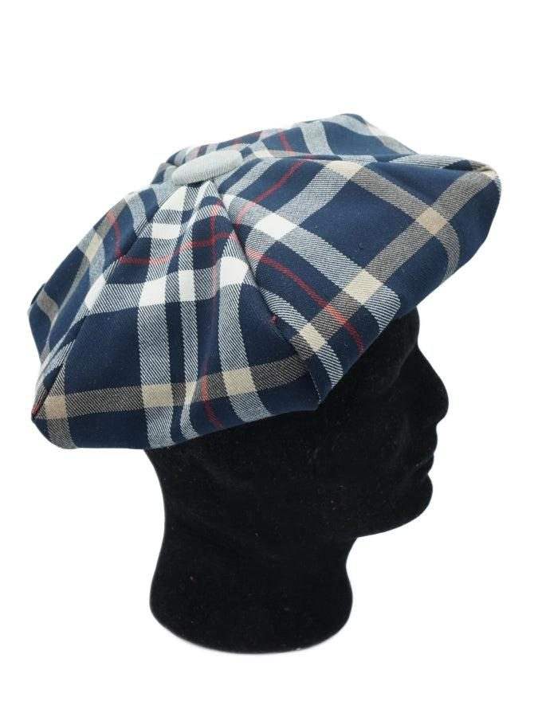

Guide du béret
Un béret français est une coiffe souple, ronde, à couronne plate et sans visière. Celui-ci est fait de tissus (pas de feutre), réversible, avec un bandeau, six pétales, un passepoil et des boutons. Ce guide suit ma vidéo, en anglais avec sous-titres.


Les mesures du pétale
Le pétale se déduit de trois mesures : le tour de tête (A), la hauteur du bandeau (B) et le diamètre du béret choisi (E), chacune avec la marge de couture. Les réglages de l'assistant donnent ces valeurs directement.
Choix des tissus
Il faut un tissu fluide, avec une certaine épaisseur ou un certain poids. L'épaisseur et le poids peuvent être corrigés avec un entoilage. Un peu d'élasthanne (spandex) convient, pas trop.
Préparer les pétales
Fixez un entoilage léger sur les deux tissus. Le marquage est facile, la coupe aussi, au cutter rotatif, trois pétales à la fois. Si le tissu est à motif (un tartan, par exemple), coupez les pétales dans une seule longueur de tissu : les motifs se raccordent, à vérifier avant de coudre.
Le passepoil
Il existe de nombreux tutoriels pour fabriquer et coudre un passepoil. Je préfère faire le mien, pour mieux assortir mes tissus ; on en trouve aussi de tout prêts.
Coudre les pétales
Cousez les pétales ensemble, pour chacun des deux tissus. Laissez une ouverture d'environ 5 cm dans l'une des coutures qui servira à retourner le béret une fois l'assemblage terminé. Les boutons sont plus beaux s'ils contrastent un peu avec les tissus.
Assemblage
Fixez d'abord le passepoil sur l'un des tissus, avec beaucoup de pinces, puis vérifiez la couture. Glissez ensuite la première partie dans la seconde, les coutures de la première face aux coutures de la seconde, et pincez encore. La couture finale se fait au plus près du cordon du passepoil.
Retourner et fermer
Retournez le béret par l'ouverture : ce n'est jamais facile quand elle est petite, mais c'est mieux ainsi. Fermez l'ouverture avec de la colle spéciale tissu, en maintenant avec des épingles pendant le séchage, puis retirez-les.
Vidéo : béret français réversible (Reversible French Beret Tutorial)